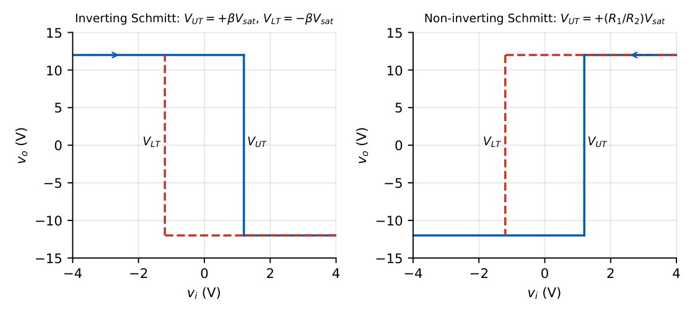
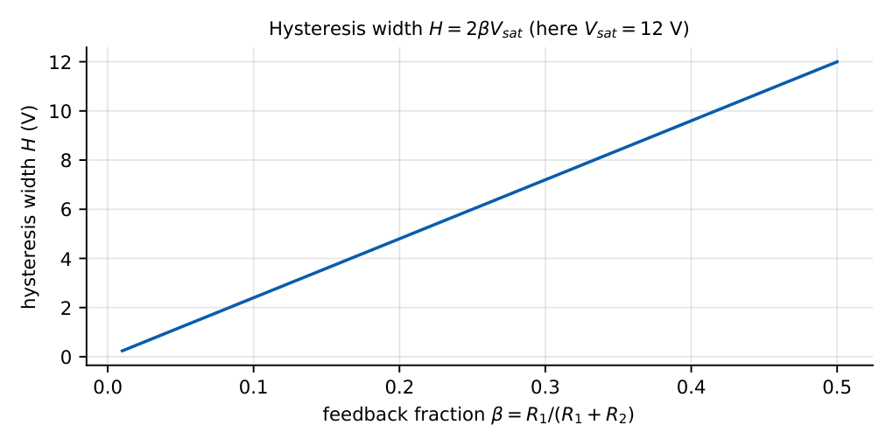
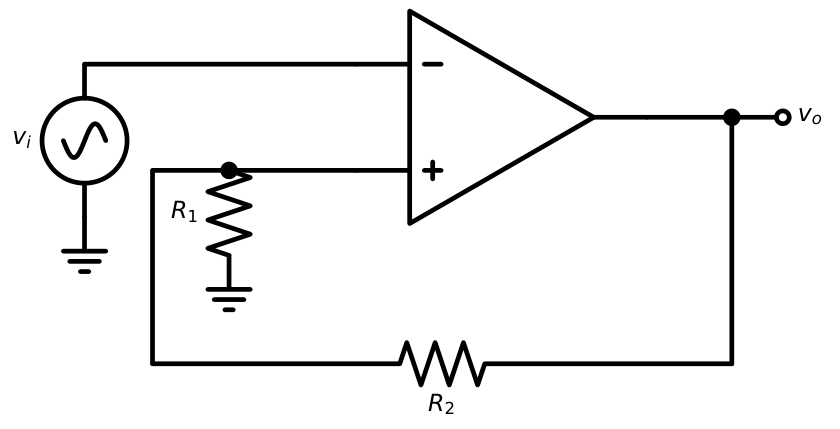
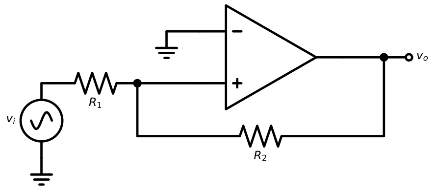
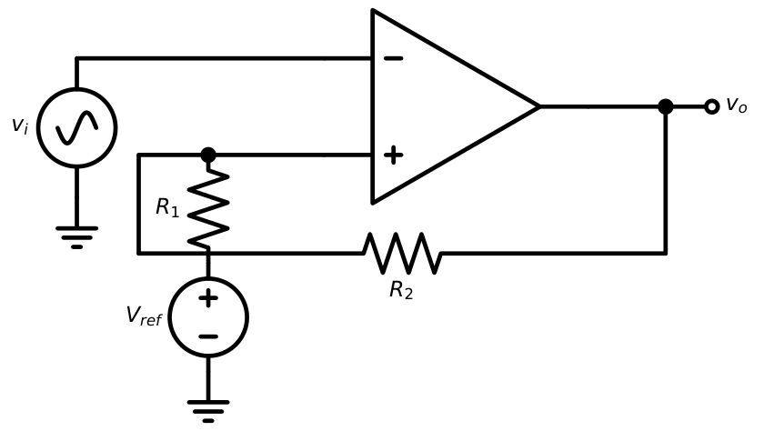
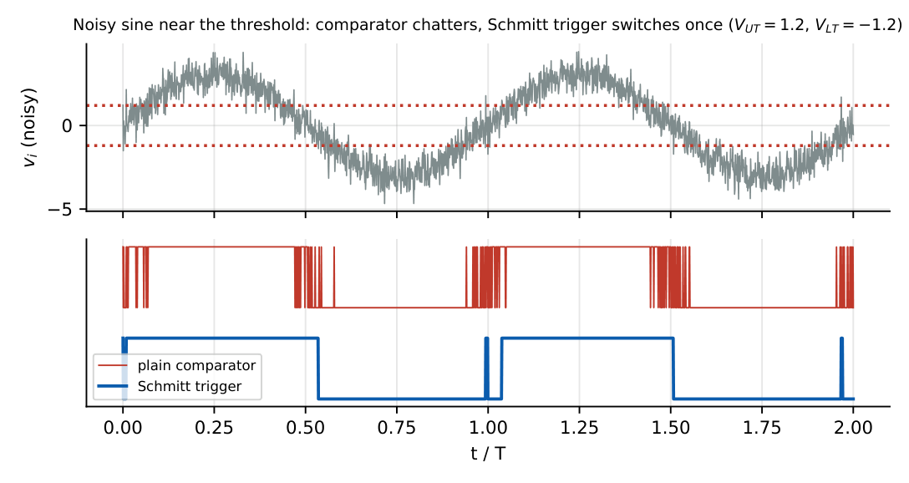

Schmitt Triggers
In this chapter
23.1 Positive feedback
A comparator with positive feedback (part of the output added back to the \(+\) input) is regenerative: once the output starts to move, feedback pushes it further, giving a fast, decisive transition. Because the threshold now depends on the present output state, the circuit has memory: this is the Schmitt trigger.
23.2 Hysteresis
There are two different thresholds: an upper one \(V_{UT}\) for rising inputs and a lower one \(V_{LT}\) for falling inputs. The difference \(H=V_{UT}-V_{LT}\) is the hysteresis (dead band).

23.3 Upper threshold voltage
When the output is at \(+V_{sat}\) (or \(V_{OH}\)) the effective reference is \(V_{UT}\): for an inverting configuration, this is the point at which the input must rise to make the output flip low.
23.4 Lower threshold voltage
When the output is at \(-V_{sat}\) the reference is \(V_{LT}\): the input must fall below this for the output to flip high.
23.5 Hysteresis width
\(H=V_{UT}-V_{LT}=\dfrac{R_1}{R_1+R_2}\bigl(V_{OH}-V_{OL}\bigr)=2\beta V_{sat}\) (inverting, symmetric supplies)

23.6 Inverting Schmitt trigger

The voltage at the non-inverting input is \(v_+=\beta v_o\). The output flips when \(v_i\) crosses \(v_+\):
\(V_{UT}=+\beta V_{sat}\), \(V_{LT}=-\beta V_{sat}\), \(\beta=\dfrac{R_1}{R_1+R_2}\), \(H=2\beta V_{sat}\)
\(R_1=10\) k\(\Omega\), \(R_2=90\) k\(\Omega\), \(V_{sat}=\pm12\) V: \(\beta=0.1\), \(V_{UT}=+1.2\) V, \(V_{LT}=-1.2\) V, \(H=2.4\) V. A sine input of \(5\) V peak produces a square output that is inverted (transitions occur at \(\pm1.2\) V, not at \(0\)).
23.7 Non-inverting Schmitt trigger

Node equation at \(v_+\): \(\dfrac{v_i-v_+}{R_1}=\dfrac{v_+-v_o}{R_2}\). The output flips when \(v_+=0\) (the inverting input at ground), i.e. when \(v_iR_2+v_oR_1=0\):
\(V_{UT}=+\dfrac{R_1}{R_2}V_{sat}\), \(V_{LT}=-\dfrac{R_1}{R_2}V_{sat}\), \(H=\dfrac{2R_1}{R_2}V_{sat}\)
The output is in phase with the input (non-inverting), in contrast to the inverting circuit.
\(R_1=10\) k, \(R_2=100\) k, \(V_{sat}=\pm12\) V: \(V_{UT}=+1.2\) V, \(V_{LT}=-1.2\) V, \(H=2.4\) V.
Adding a reference (\(V_{ref}\) in place of ground) shifts the centre of the hysteresis loop.

\(V_{UT}=(1-\beta)V_{ref}+\beta V_{sat}\), \(V_{LT}=(1-\beta)V_{ref}-\beta V_{sat}\)
\(R_1=R_2=10\) k (\(\beta=0.5\)), \(V_{ref}=3\) V, \(V_{sat}=\pm10\) V: \(V_{UT}=1.5+5=6.5\) V, \(V_{LT}=1.5-5=-3.5\) V, \(H=10\) V.
23.8 Comparator-based Schmitt trigger
Dedicated comparators (LM311/LM393) have an open-collector output: \(V_{OL}\approx0\) and \(V_{OH}=V_{pull-up}\) through \(R_p\). The formulas are the same with \(V_{OH}-V_{OL}=V_{pull-up}\) (and the pull-up resistor in parallel with the feedback network). Then \(H=\beta V_{pu}\) where \(\beta=R_1/(R_1+R_2+R_p)\) (approximately). Suits single-supply designs (thresholds within \(0\ldots V_{CC}\)).
23.9 Noise immunity
Noise near a single-threshold comparator’s threshold causes repeated spurious transitions (chatter). With hysteresis the noise must exceed \(H/2\) on either side of the reference to cause a false switching.

Pick \(H\) larger than the peak-to-peak noise on the input but smaller than the minimum signal swing. \(H>V_{n,pp}\) ensures no false triggers.
A Schmitt trigger does not filter noise; it only prevents it from causing multiple transitions across the threshold. It also adds delay (the input must travel further to trigger).
23.10 GATE problems
Q1. An inverting Schmitt trigger has \(R_1=1\) k\(\Omega\), \(R_2=9\) k\(\Omega\), \(V_{sat}=\pm10\) V. The upper threshold is V.
Q2. A non-inverting Schmitt trigger has \(R_1=10\) k\(\Omega\), \(R_2=50\) k\(\Omega\), \(V_{sat}=\pm10\) V. Its hysteresis width is V.
Q3. An inverting Schmitt with \(\beta=0.2\) and \(V_{sat}=\pm5\) V has \(H=\) V.
Q4. For an inverting Schmitt with \(V_{UT}=2\) V, \(V_{LT}=-2\) V, a triangular input of \(\pm5\) V, \(10\) Hz. The output frequency is (A) 5 Hz (B) 10 Hz (C) 20 Hz (D) 40 Hz.
Q5. Positive feedback in a comparator results in (A) hysteresis (B) linear gain (C) lower input resistance (D) virtual short.
Q6. An inverting Schmitt with \(R_1=R_2\), \(V_{ref}=3\) V, \(V_{sat}=\pm10\) V has \(V_{UT}=\) , \(V_{LT}=\) V.
Answers: Q1: \(\beta=0.1\): \(V_{UT}=+1\) V. Q2: \(2\times(10/50)\times10=4\) V. Q3: \(2\times0.2\times5=2\) V. Q4: (B), one output cycle per input cycle. Q5: (A). Q6: \(\beta=0.5\): \(V_{UT}=1.5+5=6.5\), \(V_{LT}=1.5-5=-3.5\) V.
- Design an inverting Schmitt with \(V_{UT}=+2\) V, \(V_{LT}=-2\) V using \(V_{sat}=\pm10\) V and \(R_1=2\) k\(\Omega\). [\(\beta=0.2\), \(R_2=8\) k\(\Omega\)]
- A noisy signal has \(0.4\) V peak-to-peak noise and \(3\) V swing. Choose a suitable \(H\). [\(0.5\)–\(2\) V]
- For a non-inverting Schmitt with \(R_1=1\) k, \(R_2=20\) k, \(V_{sat}=15\) V: thresholds? [\(\pm0.75\) V]